FRONT LOWER SUSPENSION ARM > INSTALLATION |
| 1. TEMPORARILY INSTALL FRONT NO. 1 SUSPENSION ARM LOWER SUB-ASSEMBLY LH |
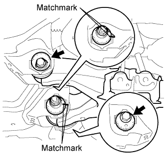 |
Temporarily install the lower suspension arm, camber adjusting cam, No. 2 camber adjusting cam, No. 2 suspension toe adjusting plate, toe adjusting cam and washer with the bolt and nut.
Align the matchmarks on the No. 2 camber adjusting cam and No. 2 suspension toe adjusting plate with the matchmarks on the vehicle body. Tighten the bolt and nut.
| 2. CONNECT FRONT LOWER BALL JOINT ATTACHMENT LH |
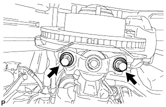 |
Connect the attachment to the steering knuckle with the 2 bolts.
| 3. CONNECT FRONT SHOCK ABSORBER WITH COIL SPRING LH |
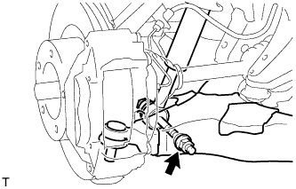 |
Connect the shock absorber with the bolt and nut.
| 4. TEMPORARILY INSTALL FRONT STABILIZER LINK ASSEMBLY RH |
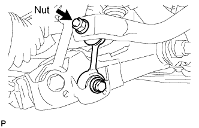 |
Temporarily install the stabilizer link with the bolt.
Temporarily install the stabilizer link with the nut.
Tighten the nut.
| 5. TEMPORARILY INSTALL FRONT STABILIZER LINK ASSEMBLY LH (w/ KDSS) |
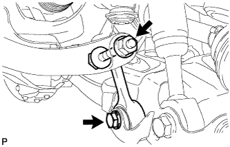 |
Temporarily install the stabilizer link to the lower arm with the bolt.
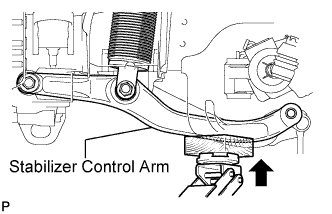 |
Temporarily install the stabilizer link to the stabilizer control arm with the bolt and nut.
| 6. TEMPORARILY INSTALL FRONT STABILIZER LINK ASSEMBLY LH (w/o KDSS) |
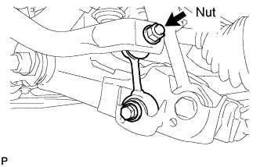 |
Temporarily install the stabilizer link with the nut and bolt.
Tighten the nut.
| 7. TIGHTEN FRONT NO. 1 STABILIZER BRACKET LH |
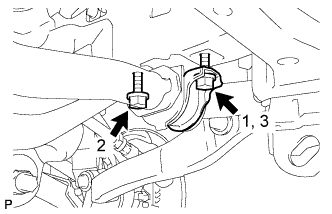 |
Tighten the 2 bolts of the front stabilizer brackets.
| 8. TIGHTEN FRONT NO. 1 STABILIZER BRACKET RH |
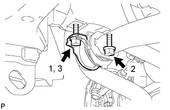 |
Tighten the 2 bolts of the front stabilizer brackets.
| 9. INSTALL NO. 1 ENGINE UNDER COVER SUB-ASSEMBLY |
 |
Install the No. 1 engine under cover with the 10 bolts.
| 10. INSTALL FRONT FENDER SPLASH SHIELD SUB-ASSEMBLY LH |
 |
Push in the clip indicated by the arrow in the illustration to install the fender splash shield.
Install the 3 bolts and screw.
| 11. INSTALL FRONT FENDER SPLASH SHIELD SUB-ASSEMBLY RH |
| 12. STABILIZE SUSPENSION |
Install the front wheels.
Lower the vehicle.
Press down on the vehicle several times to stabilize the suspension.
| 13. TIGHTEN FRONT NO. 1 SUSPENSION ARM LOWER SUB-ASSEMBLY LH |
Tighten the bolt and nut.
| 14. TIGHTEN FRONT SHOCK ABSORBER WITH COIL SPRING |
Tighten the nut.
| 15. TIGHTEN FRONT STABILIZER LINK ASSEMBLY LH (w/ KDSS) |
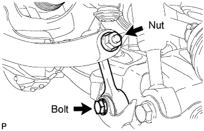 |
Tighten the bolt.
Tighten the nut.
| 16. TIGHTEN FRONT STABILIZER LINK ASSEMBLY LH (w/o KDSS) |
Tighten the bolt.
| 17. TIGHTEN FRONT STABILIZER LINK ASSEMBLY RH |
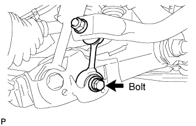 |
Tighten the bolt.
| 18. MEASURE VEHICLE HEIGHT (w/ KDSS) |
Set the tire pressure to the specified value(s) (Click here).
Bounce the vehicle to stabilize the suspension.
 |
Measure the distance from the ground to the top of the bumper and calculate the difference in the vehicle height between left and right. Perform this procedure for both the front and rear wheels.
| 19. CLOSE STABILIZER CONTROL WITH ACCUMULATOR HOUSING SHUTTER VALVE (w/ KDSS) |
Using a 5 mm hexagon socket wrench, tighten the lower and upper chamber shutter valves of the stabilizer control with accumulator housing.
| 20. INSTALL STABILIZER CONTROL VALVE PROTECTOR (w/ KDSS) |
 |
Install the valve protector with the 3 bolts.
Attach the clamp, and connect the connector to the valve protector.
| 21. INSPECT AND ADJUST FRONT WHEEL ALIGNMENT |
Inspect and adjust the front wheel alignment (Click here).
| 22. ADJUST HEADLIGHT ASSEMBLY |
for Standard:
Adjust the headlight (Click here).
for HID Headlight:
Adjust the headlight (Click here).